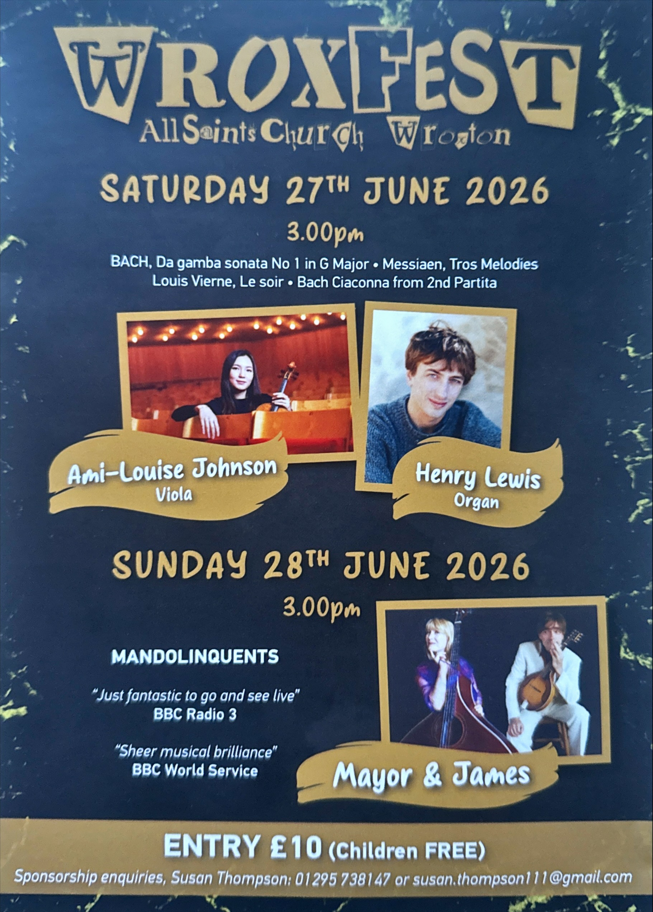
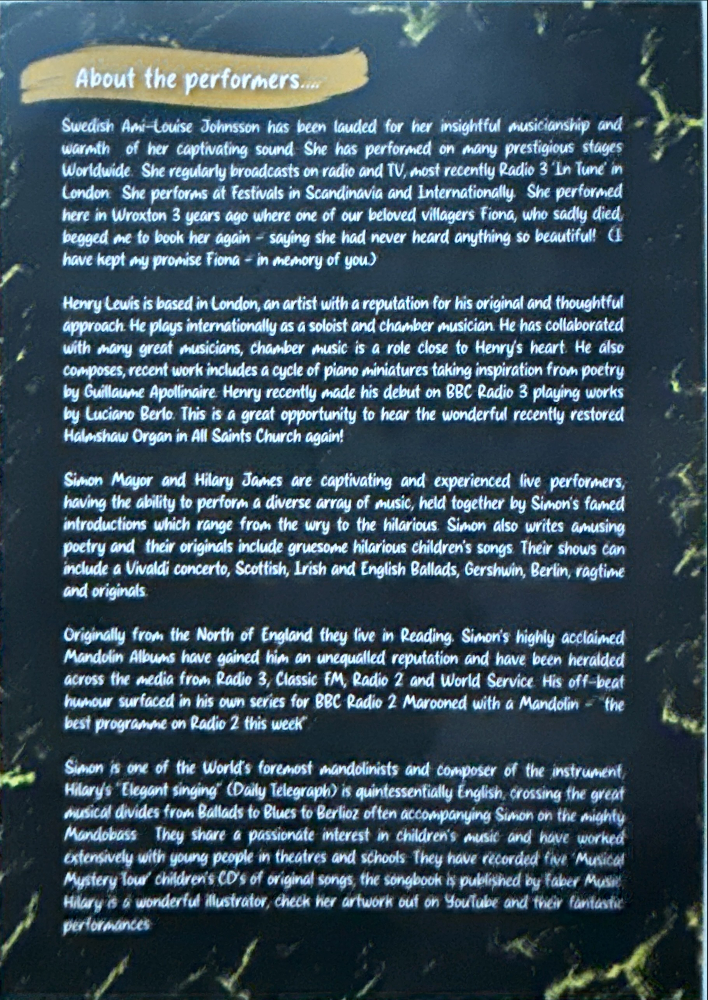
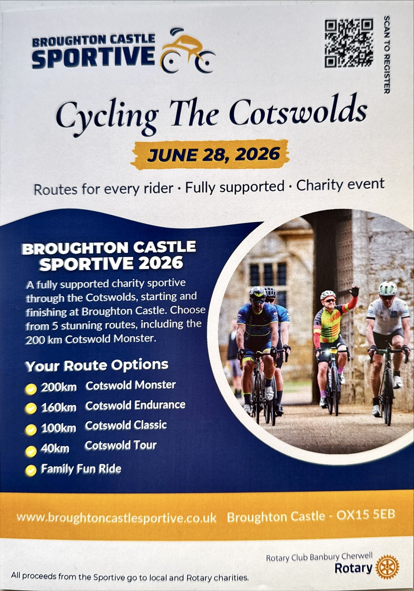
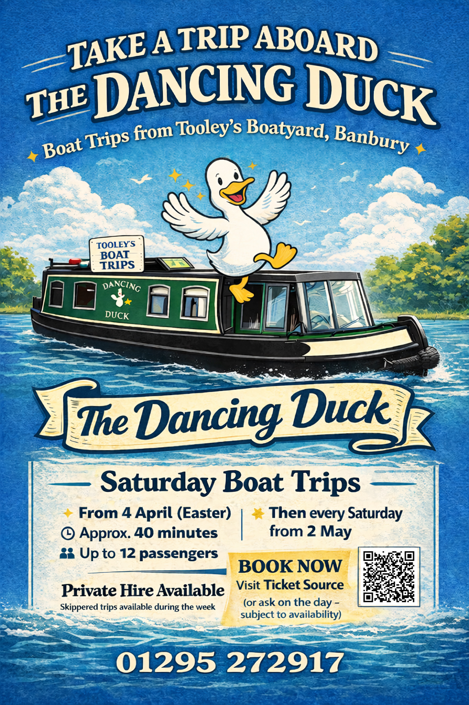
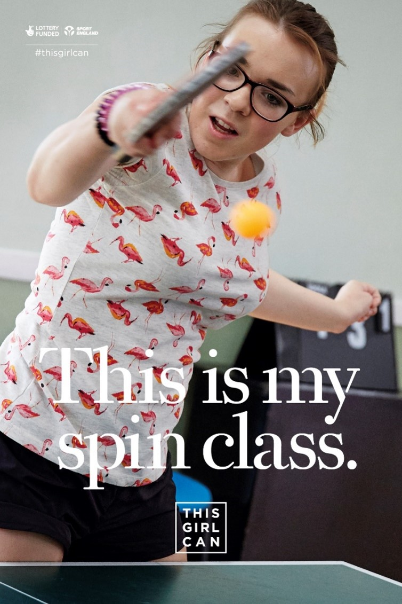
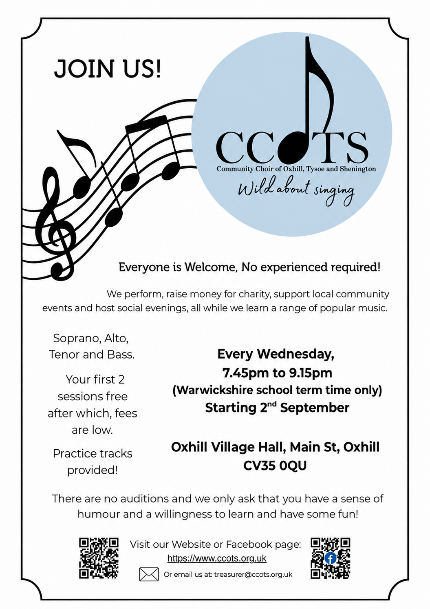

Upcoming Events
Join us for exciting events!
Celebratory Mass
📅 Monday 18th May, 2026
🕖 7:30pm
📍 St Thomas of Canterbury Church, Wroxton


Wroxfest
📅 Sunday 27th June 2026
🕖 3:00pm
📍 All Saints Church, Wroxton

Cycling the Cotswolds
📅 Sunday 28th June 2026
📍 Broughton Castle, Broughton, OX15 5EB

The Dancing Duck – Saturday Boat Trips
📅 Starting Saturday 4th April (Easter)
⏱️ Approx. 40 minute trip
📍 Tooley’s Boatyard, Banbury
👥 Up to 12 passengers per trip
🚤 Then running every Saturday from 2nd May
🎉 Private hire available (weekdays)
🎟️ Book via TicketSource or ask on the day (subject to availability)
📞 01295 272917

Tooley’s Boatyard Saturday Open Days
📅 Every Saturday
🕙 10:00am – 3:00pm
📍 Tooley’s Boatyard, Banbury
🎟️ Free Entry
🏛️ Explore the historic Banbury dockyard (established 1778)
⚒️ Working forge and blacksmith demonstrations
🛠️ Traditional boat repair and workshops
🚤 Boat trips available throughout the day
👨🏫 Guided tours of the historic site
🌐 www.tooleysboatyard.co.uk | 📞 01295 272917

Table Tennis Club
📅 Every Monday
🕖 7:00pm – 8:30pm
📍 Wroxton Village Hall
🏓 All ages and skill levels welcome!

Community Choir of Oxhill, Tysoe and Shenington
📅 Every Wednesday
🕖 7:45pm – 9:15pm
📍 Oxhill Village Hall (CV35 0QU)
🎼 Everyone is Welcome!